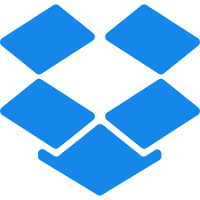
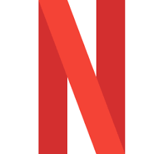

1. Dropbox
Dropbox é um serviço para armazenamento e partilha de arquivos. É baseado no conceito de "computação em nuvem". Ele pertence ao Dropbox Inc., sediada em San Francisco, Califórnia, EUA. A empresa desenvolvedora do programa disponibiliza centrais de computadores que armazenam os arquivos de seus clientes. fonte: Wikipedia
2. YouTube

YouTube é uma plataforma de compartilhamento de vídeos com sede em San Bruno, Califórnia. O serviço foi criado por três ex-funcionários do PayPal - Chad Hurley, Steve Chen e Jawed Karim - em fevereiro de 2005 fonte: Wikipedia
3. Google
Google LLC é uma empresa de tecnologia multinacional americana com foco em tecnologia de mecanismo de pesquisa, publicidade on-line, computação em nuvem, software de computador, computação quântica, comércio eletrônico, inteligência artificial e eletrônicos de consumo. fonte: Wikipedia
4. Netlix
Netflix é um serviço online de streaming norte-americano de vídeo sob demanda por assinatura lançado em 2010, disponível em mais de 190 países. fonte: Wikipedia